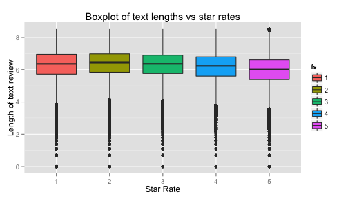
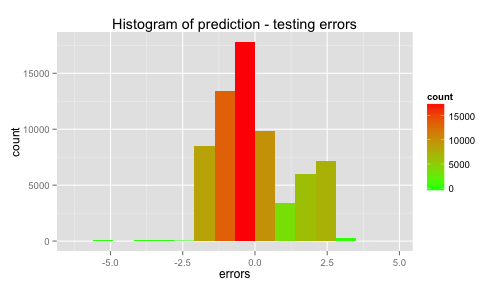

Your browser doesn't support the features required by impress.js, so you are
presented with a simplified version of this presentation.
For the best experience please use the latest Chrome, Safari or Firefox
browser.
Yelp Challenge Project
Review Rating Prediction
Author: David Álvarez
Yelp Challenge data description
The Yelp company gathers reviews from users attending to restaurants, clinics and other services.
Each review contains a star rating that is given by a user to the rated business.

Project description
Can we predict the rating of a review looking at its text?
We present the implementation of a prediction function for star-rating based on machine learning
Exploratory analysis
The data used for this project is available here:

ct <- cor.test(log(textLengths), stars)
Since the p-value of the correlation test is 0, there is no relation between text length and rating.
Prediction modelling
1) Split texts into sentences.
2) Clean stopwords, numbers, punctuation, word sufixes and sort words without duplicates.
3) Count words + sentence rating:
## word count stars avg.stars
## 4975 horribl 24 28 1.166667
## 5260 orbitz 6 7 1.166667
## 3 favorite 1496 6488 4.336898
## 94 delicious 1573 6648 4.226319
4) Prediction of a sentence is a weighted sum:
\[predict(sent) \gets \frac{\sum_{w\in sent}w.count * w.avgStars}{\sum_{w \in sent} w.count}\]
Results and Discussion
Predictions errors have \(\mu\) = -0.0067505 and \(\sigma\)=1.3158128.
RSME is 1.3158202.
Prediction model tends to be too optimistic.

Improvements: gather sets of words or sentences, cross validation, tm package, etc.